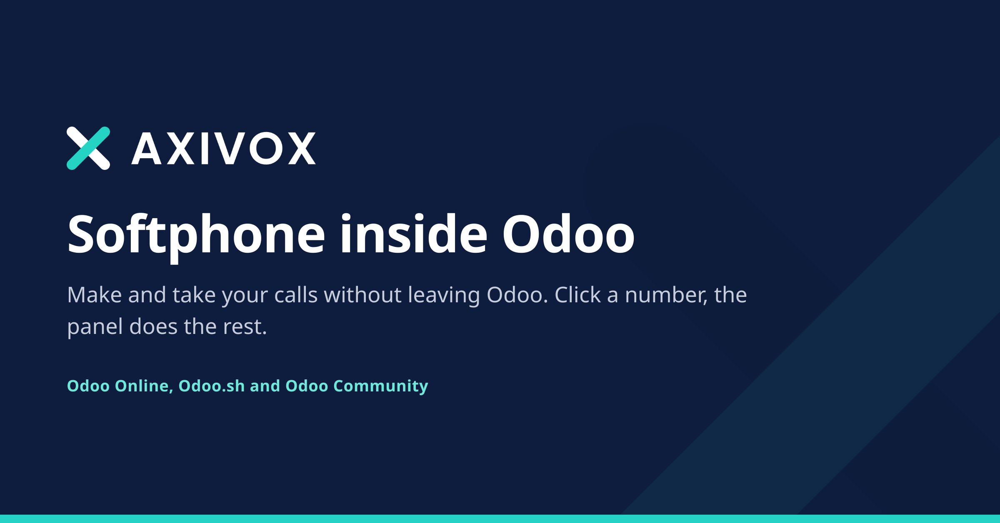
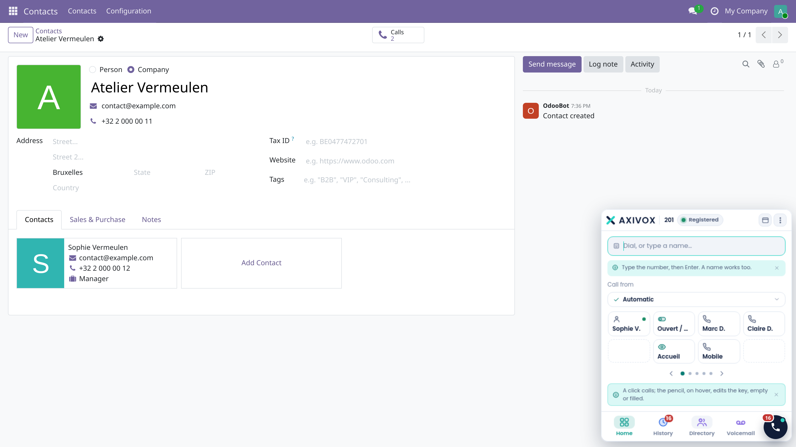

Folded, it is a single button in the corner. Drag it where you want it; it stays there.

Make and take your calls without leaving Odoo.

The module adds a button to your Odoo interface. It opens a collapsible panel carrying your Axivox softphone, which stays registered while you work: moving from a contact to a quotation does not drop the call in progress.
| Click to call | Any phone number shown in Odoo dials from the panel. |
| It opens by itself | An incoming call brings the panel up, wherever you are in Odoo. |
| It stays where you put it | The button is draggable and remembers its corner, per browser. |
This is worth stating plainly, because a telephony module usually asks for a lot. This one adds no model, no field and no table. It runs no server-side code and holds no credential of yours.
The conversation with the softphone happens inside your browser, and only with the softphone's own origin. That is also why the module is written as a plain script rather than with the Odoo framework: the contact surface stays small, and the same code runs unchanged from one Odoo version to the next.
An Axivox account is required: the panel embeds the softphone that comes with your account. Your browser needs to reach it and to be allowed to use the microphone.
Where it runs: Odoo Online, Odoo.sh and Odoo Community.
Free, and published under the LGPL-3 licence.